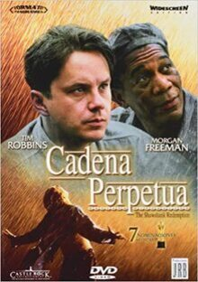
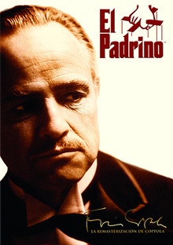
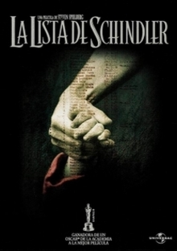
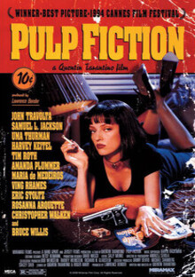
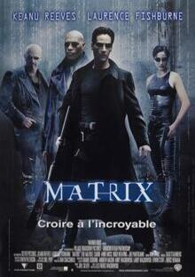
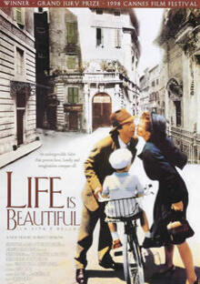
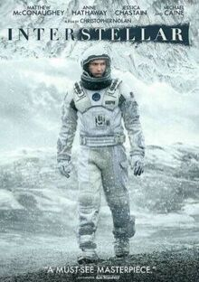
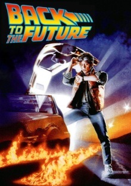
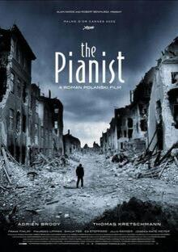

Cadena Perpetua

- Director: Frank Darabont
- Actor: Tim Robbins
- Actor: Morgan Freeman
- Año: 1994
- Metraje: 142 min
- Oscars: 0
- Valoración: 8.6
- Enlace
El Padrino

- Director: Francis Ford Coppola
- Actor: Al Pacino
- Año: 1972
- Metraje: 175 min
- Oscars: 3
- Valoración: 9.0
- Enlace
La lista de Schindler

- Director: Steven Spielberg
- Actor: Liam Neeson
- Año: 1995
- Metraje: 195 min
- Oscars: 7
- Valoración: 8.6
- Enlace
Pulp Fiction

- Director: Quentin Tarantino
- Actor: John Travolta
- Año: 1994
- Metraje: 153 min
- Oscars: 1
- Valoración: 8.6
- Enlace
Matrix

- Director: Hermanas Wachowski
- Actor: Keanu Reeves
- Año: 1999
- Metraje: 131 min
- Oscars: 4
- Valoración: 7.9
- Enlace
La vida es bella

- Director: Roberto Benigni
- Actor: Roberto Benigni
- Año: 1997
- Metraje: 117 min
- Oscars: 3
- Valoración: 8.5
- Enlace
Interstellar

- Director: Christopher Nolan
- Actor: Matthew McConaughey
- Año: 2014
- Metraje: 169 min
- Oscars: 1
- Valoración: 7.9
- Enlace
Regreso al futuro

- Director: Robert Zemeckis
- Actor: Michael J. Fox
- Año: 1985
- Metraje: 116
- Oscars: 1
- Valoración: 7.5
- Enlace
El pianista

- Director: Roman Polanski
- Actor: Adrien Brody
- Año: 2002
- Metraje: 148 min
- Oscars: 3
- Valoración: 8.2
- Enlace